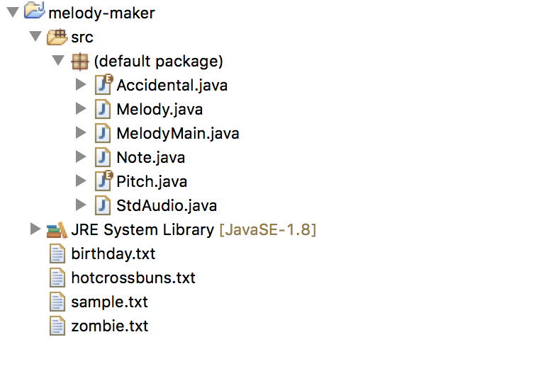

| Epona's
Song |
From the Legend of Zelda |
| Happy Birthday |
|
| Hot
Crossed Buns |
|
| Levels |
by Avicii |
| Mystery |
reverse it to see what it is |
| Pop Goes the
Weasel |
|
| Tetris |
|
| Twinkle Twinkle
Little Star |
|
| Zombie Nation |
Seattle Mariner's hype song |
| Sample |
Sample file shown to illustrate repeating
sections |
| Song |
Repeat Notes |
| Birthday.m4a |
No |
| Epona.m4a |
Yes |
| Hotcrossbuns.m4a |
Yes |
| Levels.m4a |
Yes |
| Mystery.m4a |
Yes |
| Sample.m4a |
Yes |
| Tetris.m4a |
No |
| Twinkle.m4a |
Yes |
| Weasel.m4a |
No |
| Zombie.m4a |
Yes |
When completed, submit your Melody.java class as well as song.txt to the Canvas dropbox. A grading rubric is also posted for the dropbox.